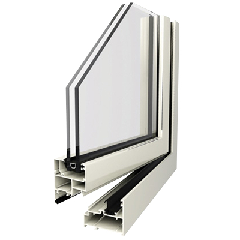
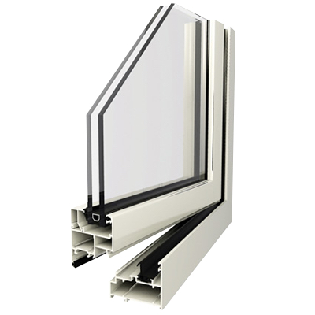

Nuestras Líneas de Aberturas
Línea Módena
La línea Módena es una de las más utilizadas en el mercado. Está pensada para aplicaciones residenciales y comerciales livianas, y se destaca por su versatilidad y facilidad de adaptación a distintos tipos de aberturas: ventanas, puertas, paños fijos, entre otros.
Características Técnicas
- Ancho de marco: 50 mm.
- Hermeticidad: media.
- Vidrios admitidos: simples o DVH.
- Tipologías disponibles: corredizas, batientes, proyectantes, paños fijos, puertas de rebatir.
Ventajas
- Excelente aislamiento térmico y acústico.
- Compatible con DVH para mejorar aislación térmica y acústica.
- Buena disponibilidad de perfiles y accesorios.
- Costo accesible frente a otras líneas más técnicas.
- Alta versatilidad: se adapta a múltiples soluciones arquitectónicas.
Galería de Imágenes
 

Línea A-30
La línea A-30 es una línea de alta prestación desarrollada por Aluar, pensada para responder a mayores exigencias de aislamiento térmico, acústico y resistencia estructural. Se utiliza mucho en viviendas premium, edificios de media y gran altura, y obras con exigencias técnicas importantes. Se distingue por su apariencia robusta y elegante, con marcos y hojas de mayor espesor que la Módena.
Características Técnicas
- Ancho de marco: 60 mm.
- Hermeticidad: alta (doble contacto con burletes).
- Vidrios admitidos: admite DVH (doble vidriado hermético) y vidrios laminados.
- Tipologías: ventanas y puertas corredizas, batientes, proyectantes, oscilobatientes.
- Compatibilidad: permite incorporar cierres multipunto, mosquiteros y sistemas de automatización.
Ventajas
- Excelente aislamiento térmico y acústico
- Alta resistencia al viento y al agua
- Ideal para DVH y obras con certificación energética
- Apariencia más robusta y estética premium
- Compatible con nuevas tecnologías (domótica, cerraduras eléctricas, etc.)
Galería de Imágenes

Línea A-40
La A-40 es una línea superior a la A-30, también desarrollada por Aluar, y está diseñada para brindar máximo rendimiento térmico, acústico y estructural. Se utiliza en obras de alta exigencia técnica, como viviendas de alto estándar, torres, edificios institucionales y proyectos sustentables. Su gran diferencial es que admite ruptura de puente térmico (RPT) y soporta DVH de gran espesor, lo que la hace ideal para zonas frías o con mucho ruido.
Características Técnicas
- Ancho de marco: 60 mm - 114 mm.
- Hermeticidad: excelente (triple contacto de burletes, cámaras múltiples).
- Vidrios admitidos: DVH, laminados especiales.
- Tipologías: corredizas, batientes, oscilo-batientes, proyectantes, puertas de abrir o de rebatir y paño fijomovil.
- RPT (opcional): mejora aislamiento térmico separando la cara exterior e interior del perfil con poliamida.
- Compatibilidad: sistemas de automatización, herrajes multipunto, burletes EPDM
Ventajas
- Máxima eficiencia energética.
- Excelente aislación acústica y térmica.
- Ideal para zonas de climas extremos o mucho viento.
- Compatible con cerramientos de gran tamaño.
- Alta durabilidad y bajo mantenimiento.
Galería de Imágenes

Línea Mediterránea
La línea Mediterránea se caracteriza por sus formas curvas y perfiles con base de apoyo de 60 mm. Ofrece soluciones eficientes para aberturas de diversas dimensiones, desde convencionales hasta grandes, manteniendo una estética moderna y atractiva
Características Técnicas
- Diseño coplanar con cortes a 45°, que otorgan una estética limpia y uniforme.
- Amplia variedad tipológica: ventanas y puertas corredizas, batientes, proyectantes, paños fijos.
- Hermeticidad eficiente: mediante sistemas de doble contacto con felpas o burletes de alta calidad.
- Admite múltiples tipos de vidrio: vidrio simple, laminado, DVH e incluso triple vidriado (TVH) según el modelo.
- Compatibilidad con sistemas de cierre: tradicionales y multipunto, según la exigencia de seguridad
Ventajas
- Versatilidad total: adaptada para aberturas estándar y de gran tamaño.
- Excelente relación costo-prestación: ideal tanto para obras económicas como exigentes.
- Estética moderna: gracias a sus líneas curvas y terminaciones limpias.
- Resistencia estructural progresiva: gracias a sus subseries que escalan según la necesidad.
Galería de Imágenes
Línea Mediterránea RPT
La Línea Mediterránea RPT está diseñada para quienes buscan un equilibrio entre estética moderna, eficiencia térmica y alto rendimiento. Integra perfiles con ruptura de puente térmico, lo que permite separar la cara interior y exterior del perfil de aluminio mediante una varilla aislante (generalmente de poliamida), reduciendo la transmisión de temperatura y condensación. Es una opción ideal para viviendas sustentables, obras en zonas con climas extremos y proyectos donde se prioriza el confort interior y el ahorro energético.
Características Técnicas
- Sistema RPT: separación térmica entre interior y exterior mediante poliamida inyectada.
- Diseño coplanar y moderno, similar a la línea Mediterránea tradicional.
- Ancho de marco: suele rondar los 70 a 80 mm, con cámaras internas múltiples.
- Admite DVH y vidrios especiales: ideal para aislación térmica y acústica.
- Hermeticidad mejorada: gracias a burletes de EPDM de alta calidad y dobles contactos.
- Tipologías: corredizas, batientes, oscilobatientes, proyectantes, paños fijos.
Ventajas
- Maximo aislamiento térmico: evita transferencia de temperatura entre el exterior y el interior.
- Gran capacidad acústica, ideal para zonas ruidosas o urbanas.
- Reducción de condensación interior, lo que mejora la durabilidad y el confort.
- Contribuye a la eficiencia energética: clave para construcciones sustentables o con certificación energética.
- Bicoloración posible: se pueden elegir distintos colores para el lado interior y exterior de la abertura.
- Ideal para viviendas de alto estándar, hoteles, oficinas premium, clínicas, etc.
Galería de Imágenes
Línea Niza
La Línea Niza es un sistema de aberturas de aluminio de media y alta prestación, pensado para quienes buscan una estética más liviana y minimalista, sin resignar funcionalidad. Está diseñada especialmente para espacios modernos y luminosos, donde se prioriza la superficie vidriada y la discreción visual de los perfiles. Es ideal para proyectos residenciales contemporáneos y viviendas de diseño.
Características Técnicas
- Perfiles delgados: menor sección visible, más luz natural.
- Marcos y hojas de bajo espesor visual, que aportan un diseño limpio y moderno.
- Diseño coplanar en la mayoría de sus versiones.
- Admite DVH de hasta 32 mm y vidrios laminados.
- Tipologías disponibles: ventanas y puertas corredizas, paños fijos, paños fijomovil, ventanas batientes y proyectantes.
- Compatible con mosquiteros y cierres multipunto.
Ventajas
- Estética minimalista y elegante, perfecta para arquitectura moderna.
- Mayor entrada de luz natural por sus perfiles esbeltos.
- Fácil mantenimiento gracias a su superficie lisa y recta.
- Posibilidad de grandes paños vidriados con buena rigidez
- Aberturas versátiles con herrajes de cámara europea, que ofrecen múltiples opciones de apertura y configuración para adaptarse a distintas necesidades.
Galería de Imágenes
Fachadas
Sistema especializado para frentes de locales comerciales y edificios. Ofrecemos tres soluciones adaptables: Integral, Vidriado y Frame, cada una diseñada para responder a distintas exigencias estéticas, técnicas y de seguridad.
Frente Integral
Sistema continuo que integra paños fijos, puertas y ventanas en una misma estructura. Ideal para fachadas modernas con alto flujo de luz natural.
- Diseño uniforme y limpio
- Gran superficie vidriada
- Bajo mantenimiento
- Buen aislamiento térmico
Frente Vidriado
Fachada totalmente acristalada con estructura mínima visible. Ofrece máxima transparencia y visibilidad, ideal para exhibir productos o interiores.
- Visibilidad total
- Estilo minimalista
- Compatible con DVH y vidrios laminados
- Imagen corporativa moderna
Frente Frame
Sistema con estructura de aluminio visible que delimita cada módulo de vidrio. Aporta mayor rigidez, diseño técnico y capacidad de personalización.
- Alta resistencia estructural
- Estética técnica segmentada
- Ideal para grandes superficies
- Posibilidad de personalización